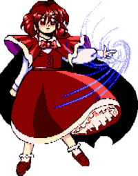

- Welcome to Touhou Wiki!
- Please register to edit. For assistance, check in with our Discord server or IRC channel.
Yumemi Okazaki
Yumemi Okazaki o̞käzäki jɯᵝmemi | |
|---|---|
|
Yumemi Okazaki in Phantasmagoria of Dim.Dream Fantasy LegendMore Character Titles | |
| Species | |
| Abilities |
Artificial Magic |
| Age |
18 |
| Occupation |
Professor |
| Location |
Probability Space Hypervessel, from the Outside World |
Music Themes | |
| |
Appearances | |
| Official Games | |
| |
Yumemi Okazaki (岡崎 夢美 Okazaki Yumemi) is a college professor searching for the mysterious power of magic so that she can study it and bring her findings back to the scientific community. When she arrives in Gensokyo, her ship, the Probability Space Hypervessel, is mistaken for some ordinary ruins by the inhabitants. She attempts to kidnap the heroine to use her as a research subject, but is ultimately defeated and sent home empty-handed. Yumemi is unfamiliar with both the magical and religious matters of Gensokyo, so she refers to Reimu Hakurei's power as magic, even when Reimu insists that it's actually divine power.
It is implied that her world of origin may not be the outside world as we know it, due to her profile and that of Chiyuri's, which suggests that a grand unified theory has been established, and there are 13 year-olds graduating from graduate school. Of note, however, is that in Magical Astronomy, which takes place in the future of the outside world, Maribel mentions that gravity was unified with the other forces recently, which could mean the grand unified theory has been established in the outside world.
Character Basis[edit]
Name[edit]
"Yumemi" means "beautiful dream". "Okazaki" is a common Japanese surname meaning "mountain". It may also be a reference to the Japanese biologist Reiji Okazaki or the Okazaki Enzyme.
Design[edit]
Yumemi's design shows that she has red eyes and dark red hair, with a matching dark red cape, vest, cloth shoulders, and skirt. Also has a white shirt and bright red bow tie. Her alternate outfit is the same, except her hair is blond and her eyes are yellow, her dress and cape is black with purple trimmings on her dress and the cloths on her shoulders as well. Her cape has a red trim, and her bow is red, but when she is casting a special attack, her bow tie is purple instead.
Story[edit]
- Phantasmagoria of Dim.Dream
- Main articles: Phantasmagoria of Dim.Dream Yumemi Arc, Reimu Arc, Mima Arc, Marisa Arc, Ellen Arc, Kotohime Arc, Kana Arc, Rikako Arc, and Chiyuri Arc
In Phantasmagoria of Dim.Dream, she is the final enemy the player encounters. Because Chiyuri was spreading misinformation, Yumemi promises to grant the player a wish should they win, both out of confidence and out of an apology for her assistant's behavior. When she loses, she nearly pulls out a bomb powerful enough to destroy the entire world, but is stopped by Chiyuri. She then proceeds to grant the player's wish.
After all the events of Phantasmagoria of Dim.Dream have ended, Yumemi is kicked out of the university she taught at for presenting a theory of magic. Yumemi and Chiyuri then return to Gensokyo, and it is implied that they are still there.
Relationships[edit]
- Chiyuri Kitashirakawa
Chiyuri Kitashirakawa is an assistant of Yumemi.
Minor Relationships[edit]
- Ruukoto
Ruukoto is a former maid of Yumemi and is Yumemi's creation. She is now owned by Reimu Hakurei in the PC-98. It's unknown if Reimu owns her in current Touhou Project.
- Mimi-chan
Mimi-chan is a weapon and a creation of Yumemi's. She is now owned by Marisa Kirisame in the PC-98. It's unknown if Marisa owns her in current Touhou Project.
Additional Information[edit]
- Yumemi appears on the cover of Phantasmagoria of Dim.Dream along with all the other characters in that game.
- She's one of the few PC-98 characters who has a full in-game portrait, which appears when she is casting a special attack.
- She is one of the two final bosses who is a human, along with Sumireko Usami from Urban Legend in Limbo. Yumemi however is the only final boss without any kind of innate power or magic.
Fandom[edit]
Official Profiles[edit]
|  | ★ 夢幻伝説 ・・・ 岡崎 夢美
|
★ Fantasy legend ... Okazaki Yumemi
|
Official Sources[edit]
- 1997/12/29 Phantasmagoria of Dim.Dream - Dialogue, endings, profile
| This page is part of Project Characters, a Touhou Wiki project that aims to write proper descriptions for all official characters of Touhou Project. Please keep the character page guidelines in mind when contributing. |